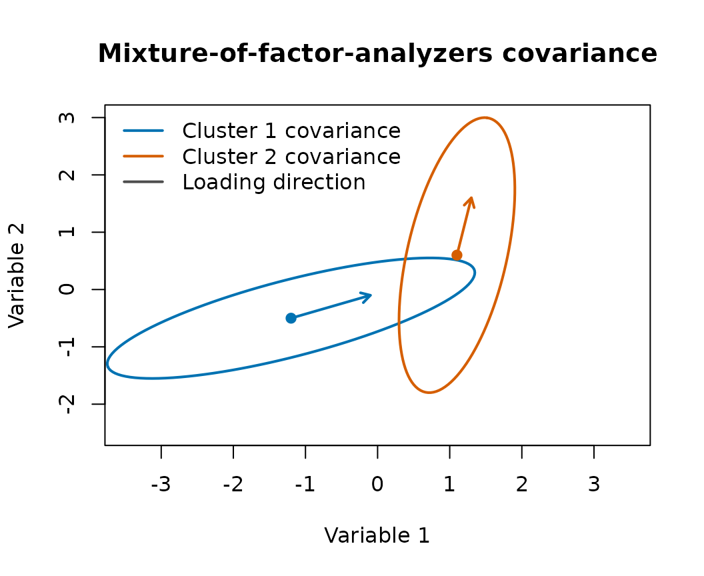

This article connects the notation in Lu, Li, and Love (2021) to the
bpgmm interface. The goal is to make clear what the package
is fitting, what the covariance labels mean, and how the RJMCMC switches
change the sampler.
Observation model
Let
be a matrix of continuous observations with
variables and
observations. bpgmm expects this same orientation:
variables in rows and observations in columns.
For cluster , the mixture of factor analyzers model writes
where
After integrating out the latent factor , the cluster-specific covariance is
The plot below shows the geometric role of this covariance. The loading matrix controls the dominant low-dimensional direction, while adds cluster-specific noise around that subspace.
ellipse_points <- function(center, sigma, level = 0.90, n = 120) {
eig <- eigen(sigma, symmetric = TRUE)
angles <- seq(0, 2 * pi, length.out = n)
circle <- rbind(cos(angles), sin(angles))
radius <- sqrt(qchisq(level, df = 2))
points <- t(center + radius * eig$vectors %*% diag(sqrt(eig$values), 2) %*% circle)
colnames(points) <- c("x", "y")
points
}
lambda_1 <- matrix(c(1.1, 0.4), ncol = 1)
lambda_2 <- matrix(c(0.2, 1.0), ncol = 1)
psi_1 <- diag(c(0.20, 0.08))
psi_2 <- diag(c(0.10, 0.25))
sigma_1 <- lambda_1 %*% t(lambda_1) + psi_1
sigma_2 <- lambda_2 %*% t(lambda_2) + psi_2
ell_1 <- ellipse_points(c(-1.2, -0.5), sigma_1)
ell_2 <- ellipse_points(c(1.1, 0.6), sigma_2)
plot(
ell_1,
type = "l",
lwd = 2,
col = "#0072B2",
xlim = c(-3.5, 3.5),
ylim = c(-2.5, 3),
xlab = "Variable 1",
ylab = "Variable 2",
main = "Mixture-of-factor-analyzers covariance"
)
lines(ell_2, lwd = 2, col = "#D55E00")
points(rbind(c(-1.2, -0.5), c(1.1, 0.6)), pch = 19, col = c("#0072B2", "#D55E00"))
arrows(-1.2, -0.5, -1.2 + lambda_1[1], -0.5 + lambda_1[2], col = "#0072B2", lwd = 2, length = 0.08)
arrows(1.1, 0.6, 1.1 + lambda_2[1], 0.6 + lambda_2[2], col = "#D55E00", lwd = 2, length = 0.08)
legend(
"topleft",
legend = c("Cluster 1 covariance", "Cluster 2 covariance", "Loading direction"),
col = c("#0072B2", "#D55E00", "gray30"),
lwd = c(2, 2, 2),
bty = "n"
)
The mixture density is
where is the mixture weight and is the number of clusters.
In pgmm_rjmcmc():
-
Xis the data matrix. -
m_initis the starting value of . -
m_rangeis the allowed range of . -
q_newis the factor dimension assigned to a newly proposed cluster. -
constraintis the starting covariance model.
PGMM covariance constraints
The paper uses three letters to describe the covariance structure.
Each letter is either C for constrained or U
for unconstrained.
| Letter | Meaning when C
|
Meaning when U
|
|---|---|---|
| 1 | all clusters share one loading matrix | each cluster has |
| 2 | all clusters share one noise covariance | each cluster has |
| 3 | noise covariance is isotropic, | noise covariance is diagonal |
The eight PGMM models are:
library(bpgmm)
#> bpgmm 1.2.3 loaded. If you use bpgmm in published work, please cite it with citation("bpgmm").
models <- c("CCC", "CCU", "CUC", "CUU", "UCC", "UCU", "UUC", "UUU")
data.frame(
model = models,
constraint = vapply(
models,
function(x) paste(model_to_constraint(x), collapse = ","),
character(1)
)
)
#> model constraint
#> CCC CCC 1,1,1
#> CCU CCU 1,1,0
#> CUC CUC 1,0,1
#> CUU CUU 1,0,0
#> UCC UCC 0,1,1
#> UCU UCU 0,1,0
#> UUC UUC 0,0,1
#> UUU UUU 0,0,0The package uses the numeric encoding internally: 1
means constrained and 0 means unconstrained.
model_to_constraint("UUU")
#> [1] 0 0 0
constraint_to_model(c(1, 1, 0))
#> [1] "CCU"Priors and posterior updates
The supplement gives the natural conjugate priors used by the MCMC updates. In compact form, the main priors are:
and
The package samples the hyperparameters , , and , with gamma hyperpriors controlled by:
-
d_vec: shape parameters. -
s_vec: rate parameters. -
delta: inverse-gamma shape for the noise covariance. -
ggamma: Dirichlet concentration for mixture weights.
The allocation update uses the posterior probability
Then
This is implemented in the package’s allocation update and is also why the joint posterior includes the product of allocated mixture weights:
RJMCMC moves
RJMCMC is used because the number of parameters changes when the number of clusters or the covariance constraint changes.
The cluster-number moves are:
| Move | Purpose |
|---|---|
| stay | update parameters without changing |
| birth | add a new empty cluster |
| death | remove an empty cluster |
| split | split one occupied cluster into two clusters |
| combine | merge two occupied clusters |
The covariance-structure moves toggle one constraint at a time:
- toggle whether is shared across clusters;
- toggle whether is shared across clusters;
- toggle whether is isotropic or diagonal.
In pgmm_rjmcmc():
-
m_step = 1enables birth/death moves for . -
split_combine = 1adds split/combine moves whenm_step = 1. -
v_step = 1enables covariance-constraint moves.
Minimal runnable example
The following example is deliberately small so the vignette can run
quickly. For real analyses, increase burn and
niter.
set.seed(2026)
X <- cbind(
matrix(rnorm(8, mean = -2, sd = 0.2), nrow = 2),
matrix(rnorm(8, mean = 2, sd = 0.2), nrow = 2)
)
known_labels <- rep(1:2, each = 4)
fit <- pgmm_rjmcmc(
X = X,
m_init = 2,
m_range = c(1, 3),
q_new = 1,
burn = 1,
niter = 3,
constraint = model_to_constraint("UUU"),
m_step = 0,
v_step = 0,
verbose = FALSE
)
fit_summary <- summarize_pgmm_rjmcmc(fit, true_cluster = known_labels)
fit_summary$n_clusters
#>
#> 2
#> 3
fit_summary$n_constraints
#>
#> UUU
#> 3
fit_summary$ari
#> [1] 1The examples above keep m_step = 0 and
v_step = 0 to make the vignette fast. A full
model-selection run uses the same interface:
fit <- pgmm_rjmcmc(
X = your_data_matrix,
m_init = 5,
m_range = c(1, 10),
q_new = 4,
burn = 5000,
niter = 15000,
constraint = model_to_constraint("UUU"),
m_step = 1,
v_step = 1,
split_combine = 1,
verbose = FALSE
)Reading posterior output
The sampler returns posterior samples as lists. The most commonly used fields are:
| Field | Meaning |
|---|---|
allocation_samples |
sampled cluster allocations |
constraint_samples |
sampled PGMM covariance constraints |
tau_samples |
sampled mixture weights |
mean_samples |
sampled cluster means |
lambda_samples |
sampled loading matrices |
psi_samples |
sampled noise covariances |
Use summarize_pgmm_rjmcmc() for posterior summaries:
names(fit)
#> [1] "tau_samples" "psi_samples"
#> [3] "mean_samples" "lambda_samples"
#> [5] "factor_score_samples" "allocation_samples"
#> [7] "constraint_samples" "alpha1_samples"
#> [9] "alpha2_samples" "beta_samples"
#> [11] "active_cluster_samples"
names(fit_summary)
#> [1] "allocation" "n_clusters" "n_constraints" "ari"Citation
If you use these methods, cite:
Lu, X., Li, Y., & Love, T. (2021). On Bayesian Analysis of Parsimonious Gaussian Mixture Models. Journal of Classification, 38, 576-593. https://doi.org/10.1007/s00357-021-09391-8
In R:
citation("bpgmm")
#> To cite package 'bpgmm' in publications use:
#>
#> Lu X, Li Y, Love T (2021). On Bayesian Analysis of
#> Parsimonious Gaussian Mixture Models. Journal of
#> Classification, 38, 576-593. doi:10.1007/s00357-021-09391-8
#>
#> A BibTeX entry for LaTeX users is
#>
#> @Article{,
#> title = {On Bayesian Analysis of Parsimonious Gaussian Mixture Models},
#> author = {Xiang Lu and Yaoxiang Li and Tanzy Love},
#> journal = {Journal of Classification},
#> year = {2021},
#> volume = {38},
#> pages = {576--593},
#> doi = {10.1007/s00357-021-09391-8},
#> }